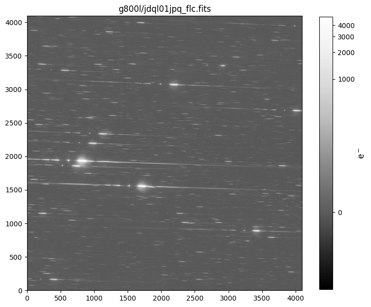
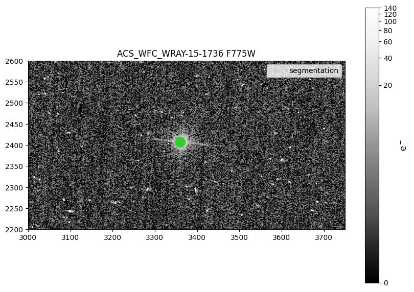
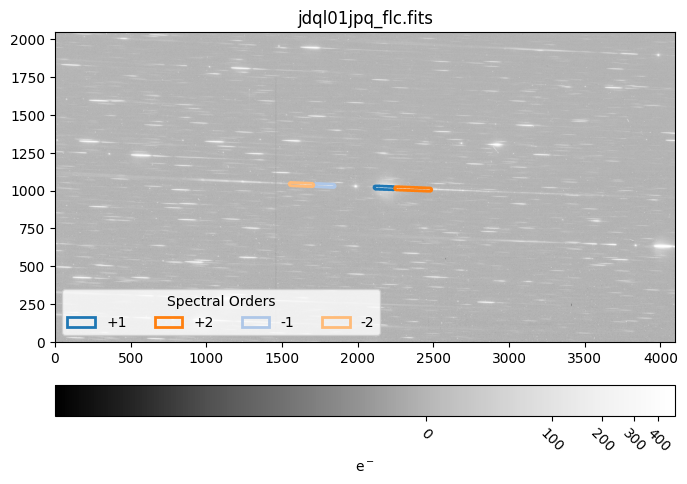
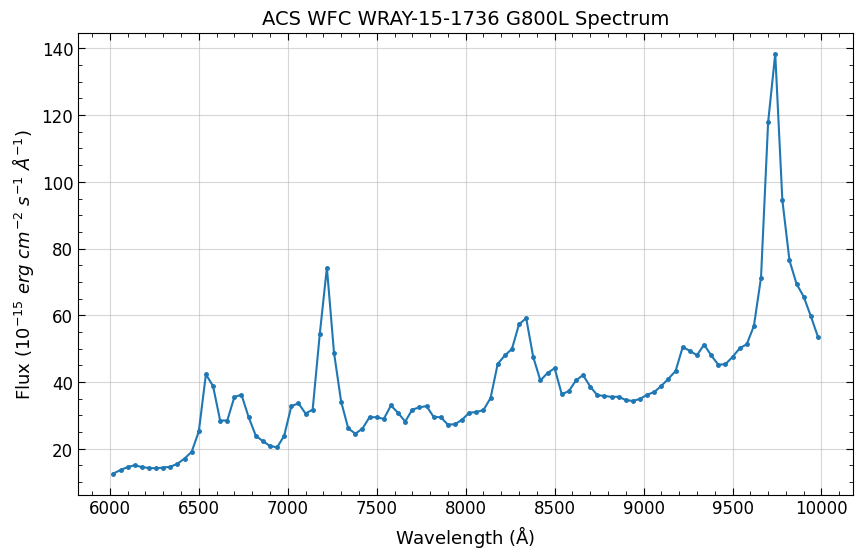

Slitlessutils Cookbook: Spectral Extraction for ΑCS/WFC Full-Frame#
This notebook contains a step-by-step guide for performing spectral extractions with Slitlessutils for G800L full frame data from ACS/WFC.
The original source for this notebook is the ACS folder on the spacetelescope/hst_notebooks GitHub repository.
Learning Goals#
In this tutorial you will:
Configure
SlitlessutilsDownload data
Preprocess data for extraction
Extract 1-D spectra with a simple boxcar method
Table of Contents#
1. Introduction
1.1 Environment
1.2 Imports
1.3 Slitlessutils Configuration
2. Define Global Variables
3. Download Data
3.1 Create Data Directories and Organize
4. Check the WCS
5. Preprocess the G800L Grism Images
6. Preprocess the F775W Direct Images
6.1 Display Drizzle Image and Overlay Segmentation Map
7. Extract the Spectra from the Grism Data
7.1 Display a Region File
7.2 Plot the Spectrum
8. Conclusions
Additional Resources
About this Notebook
1. Introduction#
Slitlessutils is an official STScI-supported Python package that provides spectral extraction processes for HST grism and
prism data. The slitlessutils software package has formally replaced the HSTaXe Python package, which will remain
on the spacetelescope GitHub organization, but will no longer be maintained or developed.
Below, we show an example workflow of spectral extraction using ACS/WFC G800L grism data and F775W direct image data.
The example data were taken as part of ACS CAL program 15401 (PI Hathi) and are downloaded from MAST via astroquery.
The images are all full frame exposures. Users with subarray data will need to employ the embedding utility within slitlessutils
before processing and extracting the data. See the WFC subarray cookbook for a tutorial on using slitlessutils with subarray
data. This tutorial is intended to run continuously without requiring any edits to the cells.
Running this notebook requires creating a conda environment from the provided requirements file in this notebook’s sub-folder
in the GitHub repository. For more details about creating the necessary environment see the next section.
To run slitlessutils, we must download the configuration reference files. These files are instrument-specific and include
sensitivity curves, trace and dispersion files, flat fields, and more. Slitlessutils has a Config class with an associated
function that will download the necessary reference files from a public Box folder. Section 1.3 shows how to use slitlessutils
to retrieve the files. Once downloaded, slitlessutils will use them for the different processes.
1.1 Environment#
This notebook requires users to install the packages listed in the requirements.txt file located in the notebook’s
sub-folder on the GitHub repository. We will use the conda package manager to build the necessary virtual environment.
For more information about installing and getting started with Conda (or Mamba) please see this page.
First, we will make sure the conda-forge channel is added so that conda can correctly find the various packages.
$ conda config --add channels conda-forge
Next, we will create a new environment called slitlessutils and initialize it with python:
$ conda create --name slitlessutils "python==3.12"
Wait for conda to solve for the environment and confirm the packages/libraries with the y key when prompted.
Once completed you can activate the new environment with:
$ conda activate slitlessutils
With the new environment activated, we can install the remaining packages from the requirements.txt file with pip:
$ pip install -r requirements.txt
Note, you may encounter an error installing llvmlite. To fix it, run the below command before installing slitlessutils:
$ conda install -c conda-forge llvmlite
We have now successfully installed all the necessary packages for running this notebook. Launch Jupyter and begin:
$ jupyter-lab
1.2 Imports#
For this notebook we import:
| Package | Purpose |
|---|---|
glob |
File handling |
matplotlib.pyplot |
Displaying images and plotting spectrum |
numpy |
Handling arrays |
os |
System commands |
shutil |
File and directory clean up |
astropy.io.fits |
Reading and modifying/creating FITS files |
astropy.visualization |
Various tools for display FITS images |
astropy.wcs.WCS |
Handling WCS objects |
astroquery.mast.Observations |
Downloading RAW and FLT data from MAST |
drizzlepac.astrodrizzle |
Creating a mosaic for the direct image filter |
pyregions |
Overlaying DS9-formatted regions |
slitlessutils |
Handling preprocessing and spectral extraction |
#%matplotlib widget
import glob
import matplotlib.pyplot as plt
import numpy as np
import os
import shutil
from astropy.io import fits
from astropy.visualization import ZScaleInterval, ImageNormalize, LogStretch
from astropy.wcs import WCS
from astroquery.mast import Observations
from drizzlepac import astrodrizzle
import pyregion
import slitlessutils as su
zscale = ZScaleInterval()
INFO MainProcess> Logger (slitlessutils) with level=10 at 2026-04-07 16:35:07.119061
1.3 Slitlessutils Configuration#
In order to extract or simulate grism spectra with slitlessutils you must have the necessary reference files.
Below, we provide a table of file descriptions, example filenames, and file types for the different reference files
required by slitlessutils.
| File Description | Example Filename | File Type |
|---|---|---|
| Sensitivity curves for the different spectral orders | ACS.WFC.G800L.+1.sens.fits |
FITS table |
| Config files with trace and dispersion coefficients | ACS.WFC.G800L.CHIP1.conf |
Text / ASCII |
| Instrument configuration parameters | hst_acswfc.yaml |
YAML |
| Normalized sky images | ACS_WFC_G800L_smooth_sky.fits |
FITS image |
| Filter throughput curves | hst_acs_f775w.fits |
FITS table |
These reference files that are required for spectral extraction and modeling with slitlessutils must reside in a
dot-directory within the user’s home directory, {$HOME}/.slitlessutils. Upon initialization, the Config()
object verifies the existence of this directory and the presence of valid reference files. If the directory does not
exist, it is created; if the reference files are missing, the most recent versions are automatically retrieved from a
public Box directory. Once the files are downloaded, slitlessutils will apply them automatically, relieving the
user from calling them manually. For more information about configuring slitlessutils, please see the
documentation here.
In the following code cell, we initialize the configuration with su.config.Config(). As stated above, if this is your
first time initializing slitlessutils configuration, su.config.Config() will download the most recent reference
files. In the future, if a new reference file version is released it can be retrieved with cfg.retrieve_reffiles(update=True).
# Initialize configuration
cfg = su.config.Config()
# Optional download of new versions of reference files
#cfg.retrieve_reffiles()
INFO MainProcess> Using reference path: /home/runner/.slitlessutils/1.0.8/
2. Define Global Variables#
These variables will be use throughout the notebook and should only be updated if you are processing different datasets.
RA and DEC should be the precise location of the source in the direct image. Header keywords RA_TARG and DEC_TARG are
not always the most precise coordinates for the active WCS.
Note, the AB mag zeropoint for the direct image filter (here, F775W) is needed by slitlessutils
to measure the magnitude
within an aperture, which allows users to reject sources that are too faint. The value used for the zeropoint does not affect the
extracted spectrum. Zeropoints for ACS/WFC filters can be found via the calculator here.
# the observations
FILTER = 'F775W' # direct image filter
GRATING = 'G800L' # grism image filter
INSTRUMENT = 'ACS'
TELESCOPE = 'HST'
# datasets to process
DATASETS = {GRATING: ["jdql01jpq", "jdql01jxq"],
FILTER: ["jdql01jnq", "jdql01jvq"]}
# target location
RA = 264.1019001 # degrees
DEC = -32.9087347 # degrees
# segmap and drizzling inputs and outputs
RAD = 0.5 # arcsec; for seg map
SCALE = 0.05 # driz image pix scale
ROOT = 'ACS_WFC_WRAY-15-1736' # output rootname for driz and later SU
# AB mag zeropoint for F775W for MJD 58153
ZEROPOINT = 25.657
3. Download Data#
Here, we download the example images via astroquery. For more information, please look at the documentation for
Astroquery, Astroquery.mast, and CAOM Field Descriptions, which is used for the obstab variable below. Additionally,
you may download the data from MAST using either the HST MAST Search Engine or the more general MAST Portal.
We download G800L and F775W _flc.fits exposures of the Wolf-Rayet star, WRAY 15-1736, from CAL
program 15401
(PI Hathi). This Wolf-Rayet star is relatively nearby and has bright emission lines, making it an ideal target for calibrating
the ACS/WFC grism (see ACS ISR 2019-01 (Hathi et al.) and references therein). After downloading the images, we move them to a
sub-directory within the current working directory.
def download(datasets, telescope):
"""
Function to download FLC files from MAST with astroquery.
`datasets` contains ROOTNAMEs i.e. `ipppssoot`.
Parameters
----------
datasets : dict
Dictionary of grism and direct rootnames
telescope : str
Used for MAST; e.g. HST
Output
-------
flt FITS files in current working dir
ipppssoot_flt.fits
"""
# get user inputted datasets create list of rootname
obs_ids = tuple(d.lower() for k, v in datasets.items() for d in v)
# Query for all images with jdlq01*
all_obs_table = Observations.query_criteria(obs_id=obs_ids[0][:6]+'*', obs_collection=telescope)
# Get all the products
products_table = Observations.get_product_list(all_obs_table)
# Filter product list for user inputted obs_ids under variable DATASETS
products_table = products_table[np.isin(products_table['obs_id'], obs_ids)]
# Download the FLT files
kwargs = {'productSubGroupDescription': 'FLC',
'extension': 'fits'}
download_table = Observations.download_products(products_table, **kwargs)
# Move the files to the cwd
for local in download_table['Local Path']:
local = str(local)
f = os.path.basename(local)
if f.startswith(obs_ids):
shutil.copy2(local, '.')
download(DATASETS, TELESCOPE)
INFO: Found cached file ./mastDownload/HST/jdql01jnq/jdql01jnq_flc.fits with expected size 168333120. [astroquery.query]
INFO: Found cached file ./mastDownload/HST/jdql01jpq/jdql01jpq_flc.fits with expected size 168079680. [astroquery.query]
INFO: Found cached file ./mastDownload/HST/jdql01jvq/jdql01jvq_flc.fits with expected size 168333120. [astroquery.query]
INFO: Found cached file ./mastDownload/HST/jdql01jxq/jdql01jxq_flc.fits with expected size 168079680. [astroquery.query]
3.1 Create Data Directories and Organize#
Below, we define the current working directory, cwd, and create directories, g800l/, f775w/, and output/, that will be used
throughout the notebook. After the directories are created we move the downloaded FLC files into them.
cwd = os.getcwd()
print(f'The current directory is: {cwd}')
The current directory is: /home/runner/work/hst_notebooks/hst_notebooks/notebooks/ACS/acs_grism_extraction_fullframe
dirs = [GRATING.lower(), FILTER.lower(), 'output']
for dirr in dirs:
if os.path.isdir(dirr):
print(f'Removing {dirr}/')
shutil.rmtree(dirr)
print(f'Creating {dirr}/')
os.mkdir(dirr)
Removing g800l/
Creating g800l/
Removing f775w/
Creating f775w/
Removing output/
Creating output/
for file in glob.glob('*flc.fits'):
filt = fits.getval(file, 'filter1').lower()
print(f"Moving {file} to {filt}/")
shutil.move(file, filt)
Moving jdql01jpq_flc.fits to g800l/
Moving jdql01jvq_flc.fits to f775w/
Moving jdql01jnq_flc.fits to f775w/
Moving jdql01jxq_flc.fits to g800l/
4. Check the WCS#
It is likely that the WCS in the direct and grism images differ. In this section we will use slitlessutils to view the active WCS.
To address the disagreement in WCS solution, we call the upgrade_wcs function within slitlessutils.
Slitlessutils also has the capability to downgrade the WCS to one of the other less complex solutions. Regardless of upgrading
or downgrading, it is imperative that the grism and direct images are on the same astrometric reference for proper spectral extraction.
More information about slitlessutils astrometry can be found here. For a more technical and detailed understanding of HST WCS
and improved absolute astrometry please see ACS ISR 2022-03 (Mack et al.). A general overview is also available on Outerspace.
su.core.preprocess.astrometry.list_wcs(f'{GRATING.lower()}/j*flc.fits')
su.core.preprocess.astrometry.list_wcs(f'{FILTER.lower()}/j*flc.fits')
g800l/jdql01jpq_flc.fits G800L
+----------+--------------------------------+--------------------------------+
| WCSVERS | 1 | 2 |
+----------+--------------------------------+--------------------------------+
| WCSNAME | IDC_4bb1536mj-GSC240 | IDC_4bb1536mj-GSC240 |
| WCSNAMEA | IDC_4bb1536mj | IDC_4bb1536mj |
| WCSNAMEB | IDC_4bb1536mj-GSC240 | IDC_4bb1536mj-GSC240 |
| WCSNAMEO | OPUS | OPUS |
+----------+--------------------------------+--------------------------------+
g800l/jdql01jxq_flc.fits G800L
+----------+--------------------------------+--------------------------------+
| WCSVERS | 1 | 2 |
+----------+--------------------------------+--------------------------------+
| WCSNAME | IDC_4bb1536mj-GSC240 | IDC_4bb1536mj-GSC240 |
| WCSNAMEA | IDC_4bb1536mj | IDC_4bb1536mj |
| WCSNAMEB | IDC_4bb1536mj-GSC240 | IDC_4bb1536mj-GSC240 |
| WCSNAMEO | OPUS | OPUS |
+----------+--------------------------------+--------------------------------+
f775w/jdql01jvq_flc.fits F775W
+----------+--------------------------------+--------------------------------+
| WCSVERS | 1 | 2 |
+----------+--------------------------------+--------------------------------+
| WCSNAME | IDC_4bb1536mj-FIT_IMG_GAIAeDR3 | IDC_4bb1536mj-FIT_IMG_GAIAeDR3 |
| WCSNAMEA | IDC_4bb1536mj | IDC_4bb1536mj |
| WCSNAMEB | IDC_4bb1536mj-GSC240-1 | IDC_4bb1536mj-GSC240-1 |
| WCSNAMEO | OPUS | OPUS |
+----------+--------------------------------+--------------------------------+
f775w/jdql01jnq_flc.fits F775W
+----------+--------------------------------+--------------------------------+
| WCSVERS | 1 | 2 |
+----------+--------------------------------+--------------------------------+
| WCSNAME | IDC_4bb1536mj-FIT_IMG_GAIAeDR3 | IDC_4bb1536mj-FIT_IMG_GAIAeDR3 |
| WCSNAMEA | IDC_4bb1536mj | IDC_4bb1536mj |
| WCSNAMEB | IDC_4bb1536mj-GSC240-1 | IDC_4bb1536mj-GSC240-1 |
| WCSNAMEO | OPUS | OPUS |
+----------+--------------------------------+--------------------------------+
As shown above, the F775W active WCS (IDC_4bb1536mj-FIT_IMG_GAIAeDR3) is different than the G800L WCS
(IDC_4bb1536mj-GSC240). It is crucial that all files have the same WCS solution for successful spectral extraction.
To fix the discrepancy, we will use `slitlessutils` to downgrade the WCS of all the images to use the solution called
IDC_4bb1536mj. For this tutorial we are not concernced with precise absolute astrometry. The key requirement is
that the images have a consistent reference, which preserves relative source position.
files = glob.glob(f'{FILTER.lower()}/j*flc.fits') + glob.glob(f'{GRATING.lower()}/j*flc.fits')
for img in files:
su.core.preprocess.astrometry.downgrade_wcs(img, key='A', inplace=True)
INFO MainProcess> downgrading WCS in f775w/jdql01jvq_flc.fits to WCSNAMEA
INFO MainProcess> downgrading WCS in f775w/jdql01jnq_flc.fits to WCSNAMEA
INFO MainProcess> downgrading WCS in g800l/jdql01jpq_flc.fits to WCSNAMEA
INFO MainProcess> downgrading WCS in g800l/jdql01jxq_flc.fits to WCSNAMEA
Finally, we print the active WCS name one last time to verify the upgrade worked as intented.
wcsnames = []
files = sorted(glob.glob(f'{GRATING.lower()}/j*flc.fits')+glob.glob(f'{FILTER.lower()}/j*flc.fits'))
for f in files:
wcsname = fits.getval(f, 'WCSNAME', ext=1)
wcsnames.append(wcsname)
print(f, wcsname)
if len(set(wcsnames)) == 1:
print("\nSuccess!\n")
else:
print("\nThere is still more than one active WCS\n")
f775w/jdql01jnq_flc.fits IDC_4bb1536mj
f775w/jdql01jvq_flc.fits IDC_4bb1536mj
g800l/jdql01jpq_flc.fits IDC_4bb1536mj
g800l/jdql01jxq_flc.fits IDC_4bb1536mj
Success!
5. Preprocess the G800L Grism Images#
The function below performs preprocessing steps to prepare the grism images for optimal spectral extraction.
This function completes two tasks, (1) background subtraction via a master-sky image, and (2) cosmic ray
(CR) flagging via drizzlepac.
In slitless spectroscopy, the background is inherently complex because every patch of sky is dispersed onto
the detector, and each spectral order has a different response and geometric footprint. This complexity is
further amplified by wavelength-dependent flat fields, resulting in a highly structured two-dimensional
background that cannot be treated like standard imaging backgrounds.
Slitlessutils handles this by subtracting a master-sky image, which is built from many science and
calibration exposures with sources removed, leaving only the instrumental and sky background structure.
This sky image is scaled to each individual exposure by fitting the sky-dominated pixels and is subtracted
before any further reduction steps. For more details about slitlessutils background subtraction see here.
Slitlessutils does not interpolate over CRs, and expects affected pixels to be flagged in the data quality
array. There are two methods in slitlessutils for identifying and flagging CRs: a Laplacian edge-detection
technique that identifies sharp, high-contrast features in individual images, and a drizzle-based approach that
uses AstroDrizzle to compare multiple aligned exposures and flag discrepant pixels. The Laplace method works
on single exposures using image gradients, while the drizzle method groups and aligns images before identifying
CRs from their inconsistencies.
Below, we flag CRs using the drizzle method. For reliable CR flagging, drizzle must be run on grism images
taken at a single orient (position angle). Slitlessutils has the ability to group the data by visit or position angle
before processing. We do not employ any grouping in our example since the data are from the same orient. For more
information about CR flagging with slitlessutils see the documentation here.
def preprocess_grism(datasets, grating):
"""
Function to perform bkg subtraction with master-sky image and CR flagging with drizzle
Parameters
----------
dataset : dict
A dictionary of grating and filter rootnames
grating : str
The grism image filter associated with datasets; e.g. G280
"""
# Create a list of all G800L files
grismfiles = [f'{grismdset}_flc.fits' for grismdset in datasets[grating]]
# Subtract background via master-sky
# Background subtraction should happen on original subarray images before embedding
# Subtract sky before CR flagging
back = su.core.preprocess.background.Background()
for grism in grismfiles:
back.image(grism, inplace=True)
# Process FLCs through drizzle for CR flagging
grismfiles = su.core.preprocess.crrej.drizzle(grismfiles, grouping=None, outdir='./')
os.chdir(GRATING.lower())
preprocess_grism(DATASETS, GRATING)
os.chdir('..')
Setting up logfile : astrodrizzle.log
AstroDrizzle log file: astrodrizzle.log
AstroDrizzle Version 3.10.0 started at: 16:36:43.804 (07/04/2026)
==== Processing Step Initialization started at 16:36:43.806 (07/04/2026)
WCS Keywords
Number of WCS axes: 2
CTYPE : 'RA---TAN' 'DEC--TAN'
CUNIT : 'deg' 'deg'
CRVAL : 264.10202159048015 -32.90822352705561
CRPIX : 2147.5 3159.5
CD1_1 CD1_2 : 1.3484910545515684e-06 -1.3823270468441817e-05
CD2_1 CD2_2 : -1.3823270468441817e-05 -1.3484910545515684e-06
NAXIS : 4295 6319
********************************************************************************
*
* Estimated memory usage: up to 1498 Mb.
* Output image size: 4295 X 6319 pixels.
* Output image file: ~ 310 Mb.
* Cores available: 4
*
********************************************************************************
==== Processing Step Initialization finished at 16:36:44.37 (07/04/2026)
==== Processing Step Static Mask started at 16:36:44.380 (07/04/2026)
==== Processing Step Static Mask finished at 16:36:44.864 (07/04/2026)
==== Processing Step Subtract Sky started at 16:36:44.865 (07/04/2026)
***** skymatch started on 2026-04-07 16:36:44.965661
Version 1.0.12
'skymatch' task will apply computed sky differences to input image file(s).
NOTE: Computed sky values WILL NOT be subtracted from image data ('subtractsky'=False).
'MDRIZSKY' header keyword will represent sky value *computed* from data.
----- User specified keywords: -----
Sky Value Keyword: 'MDRIZSKY'
Data Units Keyword: 'BUNIT'
----- Input file list: -----
** Input image: 'jdql01jpq_flc.fits'
EXT: 'SCI',1; MASK: jdql01jpq_skymatch_mask_sci1.fits[0]
EXT: 'SCI',2; MASK: jdql01jpq_skymatch_mask_sci2.fits[0]
** Input image: 'jdql01jxq_flc.fits'
EXT: 'SCI',1; MASK: jdql01jxq_skymatch_mask_sci1.fits[0]
EXT: 'SCI',2; MASK: jdql01jxq_skymatch_mask_sci2.fits[0]
----- Sky statistics parameters: -----
statistics function: 'median'
lower = None
upper = None
nclip = 5
lsigma = 4.0
usigma = 4.0
binwidth = 0.1
----- Data->Brightness conversion parameters for input files: -----
* Image: jdql01jpq_flc.fits
EXT = 'SCI',1
Data units type: COUNTS
EXPTIME: 20.0 [s]
Conversion factor (data->brightness): 19.999999999999996
EXT = 'SCI',2
Data units type: COUNTS
EXPTIME: 20.0 [s]
Conversion factor (data->brightness): 19.999999999999996
* Image: jdql01jxq_flc.fits
EXT = 'SCI',1
Data units type: COUNTS
EXPTIME: 20.0 [s]
Conversion factor (data->brightness): 19.999999999999996
EXT = 'SCI',2
Data units type: COUNTS
EXPTIME: 20.0 [s]
Conversion factor (data->brightness): 19.999999999999996
----- Computing sky values requested image extensions (detector chips): -----
* Image: 'jdql01jpq_flc.fits['SCI',1,2]' -- SKY = 23.553781509399414 (brightness units)
Sky change (data units):
- EXT = 'SCI',1 delta(MDRIZSKY) = 1.17769 NEW MDRIZSKY = 1.17769
- EXT = 'SCI',2 delta(MDRIZSKY) = 1.17769 NEW MDRIZSKY = 1.17769
* Image: 'jdql01jxq_flc.fits['SCI',1,2]' -- SKY = 23.1988525390625 (brightness units)
Sky change (data units):
- EXT = 'SCI',1 delta(MDRIZSKY) = 1.15994 NEW MDRIZSKY = 1.15994
- EXT = 'SCI',2 delta(MDRIZSKY) = 1.15994 NEW MDRIZSKY = 1.15994
***** skymatch ended on 2026-04-07 16:36:46.070351
TOTAL RUN TIME: 0:00:01.104690
==== Processing Step Subtract Sky finished at 16:36:46.119 (07/04/2026)
==== Processing Step Separate Drizzle started at 16:36:46.120 (07/04/2026)
WCS Keywords
Number of WCS axes: 2
CTYPE : 'RA---TAN' 'DEC--TAN'
CUNIT : 'deg' 'deg'
CRVAL : 264.10202159048015 -32.90822352705561
CRPIX : 2147.5 3159.5
CD1_1 CD1_2 : 1.3484910545515684e-06 -1.3823270468441817e-05
CD2_1 CD2_2 : -1.3823270468441817e-05 -1.3484910545515684e-06
NAXIS : 4295 6319
-Generating simple FITS output: jdql01jpq_single_sci.fits
-Generating simple FITS output: jdql01jxq_single_sci.fits
Writing out image to disk: jdql01jpq_single_sci.fits
Writing out image to disk: jdql01jxq_single_sci.fits
Writing out image to disk: jdql01jpq_single_wht.fits
Writing out image to disk: jdql01jxq_single_wht.fits
==== Processing Step Separate Drizzle finished at 16:36:47.534 (07/04/2026)
==== Processing Step Create Median started at 16:36:47.535 (07/04/2026)
reference sky value for image 'jdql01jpq_flc.fits' is 1.1776890754699707
reference sky value for image 'jdql01jxq_flc.fits' is 1.159942626953125
Saving output median image to: 'su_drizzle_med.fits'
==== Processing Step Create Median finished at 16:36:50.33 (07/04/2026)
==== Processing Step Blot started at 16:36:50.33 (07/04/2026)
Blot: creating blotted image: jdql01jpq_flc.fits[sci,1]
Using default C-based coordinate transformation...
-Generating simple FITS output: jdql01jpq_sci1_blt.fits
Writing out image to disk: jdql01jpq_sci1_blt.fits
Blot: creating blotted image: jdql01jpq_flc.fits[sci,2]
Using default C-based coordinate transformation...
-Generating simple FITS output: jdql01jpq_sci2_blt.fits
Writing out image to disk: jdql01jpq_sci2_blt.fits
Blot: creating blotted image: jdql01jxq_flc.fits[sci,1]
Using default C-based coordinate transformation...
-Generating simple FITS output: jdql01jxq_sci1_blt.fits
Writing out image to disk: jdql01jxq_sci1_blt.fits
Blot: creating blotted image: jdql01jxq_flc.fits[sci,2]
Using default C-based coordinate transformation...
-Generating simple FITS output: jdql01jxq_sci2_blt.fits
Writing out image to disk: jdql01jxq_sci2_blt.fits
==== Processing Step Blot finished at 16:36:54.640 (07/04/2026)
==== Processing Step Driz_CR started at 16:36:54.642 (07/04/2026)
Creating output: jdql01jpq_sci1_crmask.fits
Creating output: jdql01jxq_sci1_crmask.fits
Creating output: jdql01jpq_sci2_crmask.fits
Creating output: jdql01jxq_sci2_crmask.fits
==== Processing Step Driz_CR finished at 16:36:56.462 (07/04/2026)
==== Processing Step Final Drizzle started at 16:36:56.474 (07/04/2026)
WCS Keywords
Number of WCS axes: 2
CTYPE : 'RA---TAN' 'DEC--TAN'
CUNIT : 'deg' 'deg'
CRVAL : 264.10202159048015 -32.90822352705561
CRPIX : 2147.5 3159.5
CD1_1 CD1_2 : 1.3484910545515684e-06 -1.3823270468441817e-05
CD2_1 CD2_2 : -1.3823270468441817e-05 -1.3484910545515684e-06
NAXIS : 4295 6319
-Generating simple FITS output: su_drizzle_drc_sci.fits
Writing out image to disk: su_drizzle_drc_sci.fits
Writing out image to disk: su_drizzle_drc_wht.fits
Writing out image to disk: su_drizzle_drc_ctx.fits
==== Processing Step Final Drizzle finished at 16:37:04.116 (07/04/2026)
AstroDrizzle Version 3.10.0 is finished processing at 16:37:04.118 (07/04/2026).
-------------------- --------------------
Step Elapsed time
-------------------- --------------------
Initialization 0.5723 sec.
Static Mask 0.4845 sec.
Subtract Sky 1.2540 sec.
Separate Drizzle 1.4133 sec.
Create Median 2.7995 sec.
Blot 4.3050 sec.
Driz_CR 1.8208 sec.
Final Drizzle 7.6416 sec.
==================== ====================
Total 20.2910 sec.
Trailer file written to: astrodrizzle.log
Next, we display one of the grism images for visual inspection.
fig, axs = plt.subplots(1, 1, figsize=(9, 9))
img1 = fits.getdata(f'{GRATING.lower()}/{DATASETS[GRATING][0]}_flc.fits', ext=4)
img2 = fits.getdata(f'{GRATING.lower()}/{DATASETS[GRATING][0]}_flc.fits', ext=1)
img = np.concatenate([img2, img1])
z1, z2 = zscale.get_limits(img)
inorm = ImageNormalize(img, vmin=z1, vmax=z2*100, stretch=LogStretch())
im1 = axs.imshow(img, origin='lower', cmap='Greys_r', norm=inorm)
fig.colorbar(im1, ax=axs, shrink=0.8).set_label(label='e$^-$', size=12)
axs.set_title(f'{GRATING.lower()}/{DATASETS[GRATING][0]}_flc.fits')
plt.show()

6. Preprocess the F775W Direct Images#
With the grism data calibrated, data embedded, and consistent WCS for all images, we can continue to the preprocessing of the
direct image. The two main steps we need to complete are (1) drizzling the direct image and (2) creating a segmentation map.
Information about drizzlepac can be found here, and astrodrizzle
tutorials are hosted in the hst_notebook GitHub repo.
def preprocess_direct(datasets, filt, root, scale, ra, dec, rad, telescope, instrument):
"""
Function to create drizzle image and segmentation map for direct image data.
Parameters
----------
datasets : dict
A dictionary of grating and filter rootnames
filt : str
The direct image filter associated with datasets
root : str
The filename for the drizzle image and seg. map
scale : float
Pixel (plate) scale for drizzle image and seg. map (arcsec)
ra : float
The Right Ascension of the source in the direct image (degrees)
dec : float
The Declination of the source in the direct image (degrees)
rad : float
The radius of the segmentation size (arcsec)
telescope : str
The name of the observatory; e.g. HST
instrument : str
The name of the instrument; e.g. ACS
Outputs
-------
Drizzle image : FITS file
<root>_drc_sci.fits
Segmentation map : FITS file
<root>_drc_seg.fits
"""
# list of direct image data
files = [f'{imgdset}_flc.fits' for imgdset in datasets[filt]]
# mosaic data via astrodrizzle
astrodrizzle.AstroDrizzle(files, output=root, build=False,
static=False, skysub=False, driz_separate=False,
median=False, blot=False, driz_cr=False,
driz_combine=True, final_wcs=True,
final_rot=0., final_scale=scale,
final_pixfrac=1.0,
overwrite=True, final_fillval=0.0)
# Must use memmap=False to force close all handles and allow file overwrite
with fits.open(f'{root}_drc_sci.fits', memmap=False) as hdulist:
img = hdulist['PRIMARY'].data
hdr = hdulist['PRIMARY'].header
# Create segmentation map
wcs = WCS(hdr)
x, y = wcs.all_world2pix(ra, dec, 0)
xx, yy = np.meshgrid(np.arange(hdr['NAXIS1']),
np.arange(hdr['NAXIS2']))
rr = np.hypot(xx-x, yy-y)
seg = rr < (rad/scale)
# add some keywords for SU
hdr['TELESCOP'] = telescope
hdr['INSTRUME'] = instrument
hdr['FILTER'] = filt
# write the files to disk
fits.writeto(f'{root}_drc_sci.fits', img, hdr, overwrite=True)
fits.writeto(f'{root}_drc_seg.fits', seg.astype(int), hdr, overwrite=True)
os.chdir(FILTER.lower())
preprocess_direct(DATASETS, FILTER, ROOT, SCALE, RA, DEC, RAD, TELESCOPE, INSTRUMENT)
os.chdir('..')
Setting up logfile : astrodrizzle.log
AstroDrizzle log file: astrodrizzle.log
AstroDrizzle Version 3.10.0 started at: 16:37:06.012 (07/04/2026)
==== Processing Step Initialization started at 16:37:06.014 (07/04/2026)
Forcibly archiving original of: jdql01jnq_flc.fits as OrIg_files/jdql01jnq_flc.fits
Turning OFF "preserve" and "restore" actions...
Forcibly archiving original of: jdql01jvq_flc.fits as OrIg_files/jdql01jvq_flc.fits
WCS Keywords
Number of WCS axes: 2
CTYPE : 'RA---TAN' 'DEC--TAN'
CUNIT : 'deg' 'deg'
CRVAL : 264.10202286690503 -32.90822541928644
CRPIX : 3353.1274540388818 2445.1604022989104
CD1_1 CD1_2 : -1.388888888888889e-05 -4.045206572193934e-24
CD2_1 CD2_2 : 4.3697031360623333e-23 1.3888888888888888e-05
NAXIS : 6707 4889
********************************************************************************
*
* Estimated memory usage: up to 439 Mb.
* Output image size: 6707 X 4889 pixels.
* Output image file: ~ 375 Mb.
* Cores available: 1
*
********************************************************************************
==== Processing Step Initialization finished at 16:37:06.63 (07/04/2026)
==== Processing Step Static Mask started at 16:37:06.634 (07/04/2026)
==== Processing Step Static Mask finished at 16:37:06.635 (07/04/2026)
==== Processing Step Subtract Sky started at 16:37:06.636 (07/04/2026)
==== Processing Step Subtract Sky finished at 16:37:06.71 (07/04/2026)
==== Processing Step Separate Drizzle started at 16:37:06.719 (07/04/2026)
==== Processing Step Separate Drizzle finished at 16:37:06.721 (07/04/2026)
==== Processing Step Create Median started at 16:37:06.722 (07/04/2026)
==== Processing Step Blot started at 16:37:06.723 (07/04/2026)
==== Processing Step Blot finished at 16:37:06.724 (07/04/2026)
==== Processing Step Driz_CR started at 16:37:06.725 (07/04/2026)
==== Processing Step Final Drizzle started at 16:37:06.726 (07/04/2026)
WCS Keywords
Number of WCS axes: 2
CTYPE : 'RA---TAN' 'DEC--TAN'
CUNIT : 'deg' 'deg'
CRVAL : 264.10202286690503 -32.90822541928644
CRPIX : 3353.1274540388818 2445.1604022989104
CD1_1 CD1_2 : -1.388888888888889e-05 -4.045206572193934e-24
CD2_1 CD2_2 : 4.3697031360623333e-23 1.3888888888888888e-05
NAXIS : 6707 4889
-Generating simple FITS output: ACS_WFC_WRAY-15-1736_drc_sci.fits
Writing out image to disk: ACS_WFC_WRAY-15-1736_drc_sci.fits
Writing out image to disk: ACS_WFC_WRAY-15-1736_drc_wht.fits
Writing out image to disk: ACS_WFC_WRAY-15-1736_drc_ctx.fits
==== Processing Step Final Drizzle finished at 16:37:14.373 (07/04/2026)
AstroDrizzle Version 3.10.0 is finished processing at 16:37:14.375 (07/04/2026).
-------------------- --------------------
Step Elapsed time
-------------------- --------------------
Initialization 0.6190 sec.
Static Mask 0.0013 sec.
Subtract Sky 0.0827 sec.
Separate Drizzle 0.0016 sec.
Create Median 0.0000 sec.
Blot 0.0012 sec.
Driz_CR 0.0000 sec.
Final Drizzle 7.6468 sec.
==================== ====================
Total 8.3526 sec.
Trailer file written to: astrodrizzle.log
#
6.1 Display Drizzle Image and Overlay Segmentation Map#
Next, we display the the central region of the F775W drizzled image created in the cell above. We also overplot the segmentation map by getting
all the x and y pixels where the segmentation array is True. Visually inspect the drizzled science image (and other drizzled products if needed)
for accurate image alignment and combination, as well as the source location as defined by the segmentation map. Note that the image scaling is
specifically defined for this particular direct image, which is relatively low SNR, so it may need to be adjusted for your particular image.
# get drizzled data
d = fits.getdata(f'{FILTER.lower()}/{ROOT}_drc_sci.fits')
# get seg map coordinates
y, x = np.where(fits.getdata(f'{FILTER.lower()}/{ROOT}_drc_seg.fits') == 1)
# display the image and seg map coords
fig, axs = plt.subplots(1, 1, figsize=(10, 10))
z1, z2 = zscale.get_limits(d)
inorm = ImageNormalize(d, vmin=0, vmax=z2*10, stretch=LogStretch())
im1 = axs.imshow(d, origin='lower', cmap='Greys_r', norm=inorm)
axs.scatter(x, y, 15, marker='x', c='limegreen', alpha=0.2, label='segmentation')
axs.set_xlim(3000,3750)
axs.set_ylim(2200,2600)
fig.colorbar(im1, ax=axs, shrink=0.7).set_label(label='e$^-$', size=12)
axs.set_title(f'{ROOT} {FILTER}')
axs.legend()
plt.show()

7. Extract the Spectrum from the Grism Data#
We are now finished with all the preprocessing steps and ready to extract the 1D spectrum. The function below demonstrates a complete
single-orientation spectral extraction workflow using slitlessutils, starting from calibrated ACS/WFC grism exposures and a direct-image–
based source catalog (segmentation map).
First, the files are loaded into WFSSCollection, which serves as a container for the grism FLC exposures used in the extraction. Grouping
them into a collection allows slitlessutils to treat the set of exposures as a unified dataset when projecting sources, building pixel‑dispersion
tables (PDTs), and performing extraction. For more information about WFSSCollection see the documentation here.
Next, sources are defined using the segmentation map and drizzled science image from the associated direct filter, which are initialized into a
SourceCollection data structure. For more information about SourceCollection see the documentation here.
The Region module creates visual outlines of where each source’s dispersed light appears on the grism images. It does this by reading
the PDTs and distilling them into DS9‑compatible region files that trace the footprint of each spectral order across the detector. These
region files are not required for extraction, but are useful for quickly inspecting which parts of the grism images contribute to each object’s
spectrum. More information about Region can be found here.
Tabulate performs the forward‑modeling step that connects the direct image to the grism frames. For every relevant direct‑image pixel,
it computes the trace, wavelength mapping, and fractional pixel coverage and stores the results in a PDT. Because this calculation is
computationally expensive, slitlessutils only computes PDTs when requested and then saves them in hierarchical data-format 5 (HDF5)
files inside the su_tables/ directory for later use. The PDT files only capture the geometric mapping of the scene. Instrumental effects and
the actual astrophysical signal are added later in the workflow, so the PDTs depend solely on the WCS and its calibration. See the Tabulate
documentation for more information.
Finally, the Single class carries out the one‑dimensional extraction for a single telescope orientation (position angle) and spectral
order (here, the +1 order). It uses the PDTs to forward‑model how each direct‑image pixel contributes to the dispersed spectrum and
assembles these contributions into a 1D spectrum. The method is conceptually similar to HSTaXe, but with a more flexible contamination
model and a full forward‑modeling approach that can support optimization such as SED‑fitting workflows. This extraction mode is intended
for relatively simple, isolated sources where self‑contamination is not severe. A given spectral order should be extracted one at a time. Note,
the software will overwrite the x1d.fits file so users must use unique file names with root. The documentation for Single can be
found here.
def extract_single(grating, filt, root, zeropoint, tabulate=False):
"""
Basic single orient extraction similar to HSTaXe
Parameters
----------
grating : str
The grism image filter associated with datasets; e.g. G280
filt : str
The direct image filter associated with datasets e.g. F200LP
root : str
The rootname of the drz and seg FITS file; will also be the 1d spectrum output file rootname
zeropoint : float
The AB mag zeropoint of the direct image filter; needed when simulating or rejecting faint sources
tabulate : Bool
If true, SU computes the pixel‑dispersion tables. Only need once per `data` and `sources`
Output
------
1D spectrum : FITS file
root_x1d.fits
"""
# load grism data into slitlessutils
data = su.wfss.WFSSCollection.from_glob(f'../{grating.lower()}/*_flc.fits')
# load the sources from direct image into slitlessutils
sources = su.sources.SourceCollection(f'../{filt.lower()}/{root}_drc_seg.fits',
f'../{filt.lower()}/{root}_drc_sci.fits',
local_back=False,
zeropoint=zeropoint)
# create region files for spectral orders
# regions are NOT required for spectral extraction
reg = su.modules.Region(ncpu=1, orders=['+1', '+2', '-1', '-2'])
reg(data, sources)
# project the sources onto the grism images; output to `su_tables/`
if tabulate:
tab = su.modules.Tabulate(ncpu=1)
tab(data, sources)
# run a single-orient extraction on the +1 order
ext = su.modules.Single('+1', mskorders=None, root=ROOT, nsigmaclip=2, maxiters=10, ncpu=1)
ext(data, sources, width=15)
os.chdir('output')
extract_single(GRATING, FILTER, ROOT, ZEROPOINT, tabulate=True)
os.chdir('..')
INFO MainProcess> Loading from glob: ../g800l/*_flc.fits
INFO MainProcess> Loading WFSS data from python list
INFO MainProcess> loading throughput from keys: ('hst', 'acs', 'f775w')
INFO MainProcess> Loading a classic segmentation map: ../f775w/ACS_WFC_WRAY-15-1736_drc_seg.fits
INFO MainProcess> Serial processing
Regions: 0%| | 0/2 [00:00<?, ?it/s]
WARNING MainProcess> Filename does not contain suffix.
WARNING MainProcess> Filename does not contain suffix.
Regions: 50%|█████ | 1/2 [00:01<00:01, 1.04s/it]
WARNING MainProcess> Filename does not contain suffix.
WARNING MainProcess> Filename does not contain suffix.
Regions: 100%|██████████| 2/2 [00:01<00:00, 1.96it/s]
Regions: 100%|██████████| 2/2 [00:01<00:00, 1.69it/s]
INFO MainProcess> Serial processing
Tabulating: 0%| | 0/2 [00:00<?, ?it/s]
WARNING MainProcess> Filename does not contain suffix.
Tabulating: 50%|█████ | 1/2 [00:15<00:15, 15.98s/it]
WARNING MainProcess> Filename does not contain suffix.
Tabulating: 100%|██████████| 2/2 [00:32<00:00, 16.09s/it]
Tabulating: 100%|██████████| 2/2 [00:32<00:00, 16.08s/it]
INFO MainProcess> Serial processing
Extracting (single): 0%| | 0/2 [00:00<?, ?it/s]
WARNING MainProcess> Filename does not contain suffix.
INFO MainProcess> Building contamination model for jdql01jpq_flc.fits/WFC1
INFO MainProcess> Building contamination model for jdql01jpq_flc.fits/WFC2
Extracting (single): 50%|█████ | 1/2 [00:01<00:01, 1.31s/it]
WARNING MainProcess> Filename does not contain suffix.
INFO MainProcess> Building contamination model for jdql01jxq_flc.fits/WFC1
INFO MainProcess> Building contamination model for jdql01jxq_flc.fits/WFC2
Extracting (single): 100%|██████████| 2/2 [00:02<00:00, 1.29s/it]
Extracting (single): 100%|██████████| 2/2 [00:02<00:00, 1.29s/it]
INFO MainProcess> Combining the 1d spectra
INFO MainProcess> Writing: /home/runner/work/hst_notebooks/hst_notebooks/notebooks/ACS/acs_grism_extraction_fullframe/output/ACS_WFC_WRAY-15-1736_x1d.fits
WARNING: VerifyWarning: Card is too long, comment will be truncated. [astropy.io.fits.card]
7.1 Display a Region File#
Below, we display a grism FLC file and the associated region file. The region files are useful for quickly inspecting which part
of the grism image contribute to each object’s spectrum. The +1, +2, -1, and -2 spectral orders for the observation are outlined in
dark blue, dark orange, light blue, and light orange respectively. More information about the slitlessutils region files can be
found here.
i = 0 # which image to display
fig, axs = plt.subplots(1, 1, figsize=(8, 8))
reg_filename = glob.glob(f'output/{DATASETS[GRATING][i]}*_WFC1.reg')[0]
region = pyregion.open(reg_filename)
patch_list, _ = region.get_mpl_patches_texts()
orders = ['+1', '+2', '-1', '-2']
for idx, p in enumerate(patch_list):
p.set_linewidth(2)
p.set_label(orders[idx])
axs.add_patch(p)
axs.legend(title="Spectral Orders", ncol=4, loc='lower left')
flc = fits.getdata(f'{GRATING.lower()}/{DATASETS[GRATING][i]}_flc.fits', ext=4)
z1, z2 = zscale.get_limits(flc)
inorm = ImageNormalize(flc, vmin=z1, vmax=z2*10, stretch=LogStretch())
im1 = axs.imshow(flc, origin='lower', cmap='Greys_r', norm=inorm)
axs.set_title(f'{DATASETS[GRATING][i]}_flc.fits')
cbar = fig.colorbar(im1, ax=axs, pad=0.07, orientation='horizontal', label='e$^-$')
for t in cbar.ax.get_xticklabels():
t.set_rotation(-45)
plt.show()

7.2 Plot the Spectrum#
Finally, what we’ve all been waiting for(!), plotting the extracted spectrum. The Single module produces a single spectrum for each
source and grism image. Those spectra are then combined together into a single one-dimensional spectrum for each source and saved
as a x1d.fits file. In this example, we only have one source so there is a single spectrum.
The x1d file is a binary table with columns for the wavelength (lamb), flux (flam), uncertainty (func), contamination (cont),
and number of pixels (npix). By default configuration, the flux and uncertainty values are in units of erg s-1 cm-2 · Å-1 and scaled by
10-17 (see cfg.fluxunits and cfg.fluxscale below).
For a reference, the G800L spectrum was published in ACS ISR 2019-01 (Hathi et al., Figure 5) and ACS ISR 2003-01 (Pasquali et al.).
cfg.fluxunits, cfg.fluxscale
('erg / (s * cm**2 * Angstrom)', 1e-17)
fig, ax = plt.subplots(1, 1, figsize=(10, 6))
ax.grid(alpha=0.5)
dat = fits.getdata(f'output/{ROOT}_x1d.fits')
lrange = (6000, 10000)
wav = np.where((lrange[0] < dat['wavelength']) & (dat['wavelength'] < lrange[1]))
ax.errorbar(dat['wavelength'][wav],
dat['flux'][wav]*cfg.fluxscale/1e-15,
yerr=dat['uncertainty'][wav]*cfg.fluxscale/1e-15,
marker='.', markersize=5)
# matplotlib formatting
ax.minorticks_on()
ax.yaxis.set_ticks_position('both'), ax.xaxis.set_ticks_position('both')
ax.tick_params(axis='both', which='minor', direction='in', labelsize=12, length=3)
ax.tick_params(axis='both', which='major', direction='in', labelsize=12, length=5)
ax.set_xlabel(r'Wavelength ($\mathrm{\AA}$)', size=13)
ax.set_ylabel(r'Flux (10$^{-15}$ $erg\ cm^{-2}\ s^{-1}\ \AA^{-1}$)', size=13)
ax.set_title(f"{ROOT.replace('_', ' ')} {GRATING} Spectrum", size=14)
plt.show()

8. Conclusions#
Thank you for going through this notebook. You should now have all the necessary tools for extracting a 1D spectrum from ACS WFC
grism data with slitlessutils. After completing this notebook you should be more familiar with:
Downloading data.
Preprocessing images for slitlessutils.
Creating and displaying region files.
Extracting and plotting a source’s spectrum
Additional Resources#
Below are some additional resources that may be helpful. Please send any questions through the HST Help Desk.
About this Notebook#
Authors: Roberto Avila & Jenna Ryon (ACS Team), Benjamin Kuhn (WFC3 Team)
Last Updated: 2026-03-31
Created 2026-01-20
Citations#
If you use Python packages for published research, please cite the authors.
Follow these links for more information about citing packages used in this notebook:
For more help:#
More details may be found on the ACS website and in the ACS Instrument and Data Handbooks.
Please visit the HST Help Desk. Through the help desk portal, you can explore the HST Knowledge Base and request additional help from experts.